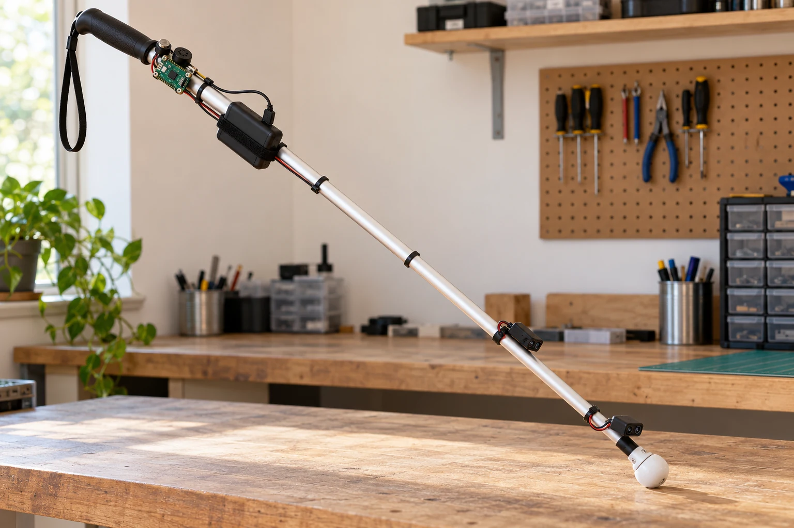

Проекты TechNest
Инженерные идеи для доступной среды. Month 2 · Disability Access.

Мобильность · ЗрениеGuideCane
Электронное дооснащение трости примерно за $28.95: два VL53L1X, Pico 2 и звуковые сигналы. Один сенсор направлен вперёд, второй — вниз у наконечника.
Версия Lite. Бюджет новых деталей: трость, USB power bank, кабель и крепления используются повторно. Экспериментальный прототип. Изображение создано ИИ и показывает возможный внешний вид. Открыть проект → Мобильность · Кисть рукиADAPT / ONE
Концепт модульного механического протеза кисти со сменными наконечниками и интерактивными режимами хвата.
Интерактивная 3D-модель · концепт прототипа Открыть проект →